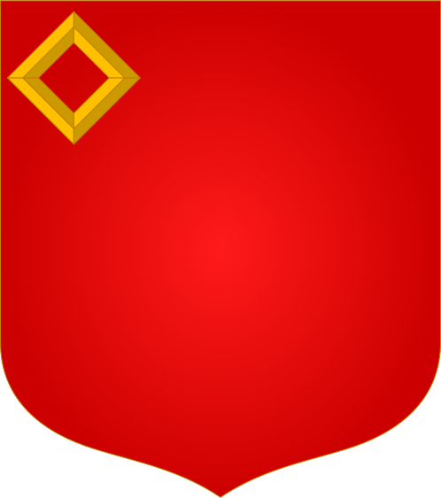

placer un meuble sur un champ
Un écu se lit comme s'il était tenu par quelq'un faisant face à l'observateur: la gauche (senestre) et la droite (dextre) y sont donc inversées.

au chef dextre
en chef
au chef senestre
au point d'honneur
située sur le ⅓ supérieur de l'écu, cette
position correspond aussi au centre du champ
si celui ci est réhaussé par une champaigne
à dextre
en cœur / en abîme
située au centre de l'écu, cette position est appelée abîme sur un champ plain, et cœur dans les autres cas
en effet, un meuble couvre le champ autant que possible et est centré dans celui‐ci, s'il est réduit
sans que rien ne l'oblige, cela est à blasonner

à senestre
au nombril
située sur le ⅓ inférieur de l'écu, cette
position correspond aussi au centre du champ
si celui ci est augmenté ou abaissé d'un chef